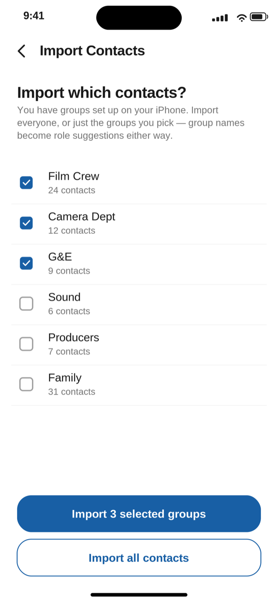
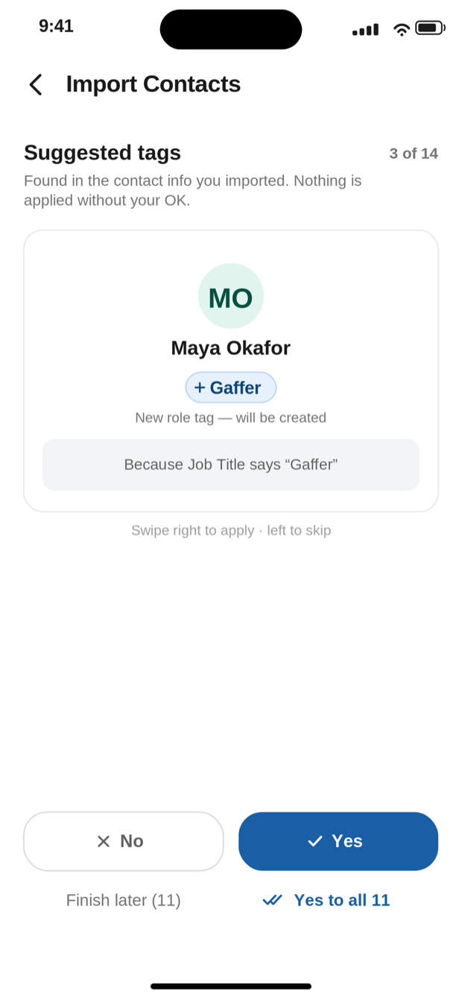
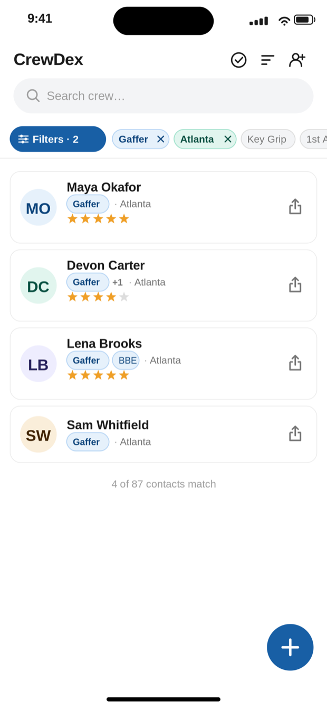

Import your contacts, say yes to a few suggested tags, and you've got a crew directory you can filter in seconds. It all stays on your phone — no account, no cloud.
What stays on your phone
Ran the condor on the Tulsa night work without a hitch. First call for big night exteriors. Books out early in the fall.
Maya Okafor is an example record, written to show the app's fields.
What you send
The exact text CrewDex produces. Five fields, nothing else. A .vcf card carries the same five.
Star ratings, notes, specialty tags, and personal tags are excluded from shared output: the plain-text card and the .vcf file alike. That rule is written into the share formatter and guarded by an automated test that has to pass before any release can ship.
Private
Sent
Ran the condor on the Tulsa night work without a hitch. First call for big night exteriors.
The rating, the working note, and the specialty and personal tags never made it across. They stayed in the app.
No retyping, no starting from scratch. Point CrewDex at your address book and pull in everyone — or just the iPhone groups worth having: crew, and not your dentist. Duplicates are spotted and skipped as they come in.
Rather not grant contacts access at all? Add people by hand and you'll never even see the permission prompt. Either way, importing copies people into CrewDex — your address book itself is never touched.


CrewDex reads the job titles, companies, and iPhone group names already sitting in your contacts and proposes tags one person at a time, and tells you why it picked each one. Swipe right to apply, left to skip, or say yes to all and be done. Nothing is applied without your OK.
The matching is a plain lookup table, not a guess. No fuzzy matching, no model, no data leaving the phone to make it work.
Your phone's address book knows names and numbers. It doesn't know who's a gaffer, who's in Atlanta, or who you'd hire again. Once your crew is tagged, stack those tags: Gaffer plus Atlanta narrows an eighty-seven-person directory to the four who can actually take the call.
4 of 87 contacts match
Five steps, once. After that it's a filter and a share.
Import from your contacts (everything, or only the groups you choose), or tap the + button and add people by hand. Manual entry works without granting any permission at all.
CrewDex proposes role, city, and specialty tags from what it found. Take them one at a time, accept them all at once, or stop and finish later. The queue waits for you, and a banner on the crew list brings you back to it.
Star anyone one to five. Write a note about how the job actually went. Add personal tags like A-Team. This is the layer that makes the directory worth keeping, and it is the layer that can never be shared.
Open Filters, stack the tags you need, and swipe right on anyone to send their card. Share the whole filtered list at once when a coordinator needs options. The share log remembers who you referred and when.
The role board turns your tags into slots for a specific show, so you can see the positions you've filled and the ones still open. Membership follows your role tags, so anything you tag anywhere shows up here immediately.
CrewDex was built for people whose contact list is their livelihood. There is nowhere for that list to go, because there is no cloud behind the app at all, which is also why it keeps working on a set with no signal.
Email is the fastest way to reach me, and I read everything. Write to tyler@tylermarkhenderson.com. Bugs, feature requests, and "this made no sense to me" are all welcome.
CrewDex Pro is $0.99 per month and auto-renews monthly until you cancel, after a 7-day free trial. Apple runs the trial and the billing. Cancel any time from your iPhone's subscription settings; cancelling during the trial costs nothing.
To be straight with you: the subscription isn't an upgrade tier. After the trial, Pro is what opens the app — there's no limited free version underneath it.
On your phone. CrewDex has no servers, no accounts, and no cloud sync. Nothing you enter leaves the device unless you choose to share a contact card.
Name, role, location, phone, and email. Your star ratings, notes, specialty tags, and personal tags are never included: not in the text card, not in the .vcf file.
No. Importing copies the contacts you pick into CrewDex. Your device address book is never modified, and nothing is written back to it.
No. You can add crew manually without granting anything. Import just makes the first hour faster. If you've given iOS limited contacts access, CrewDex tells you and offers a shortcut to the setting.
Yes. That is the point. Everything runs against the local database, so filtering and sharing work in a basement, a stage, or the middle of nowhere.
Delete the app. All CrewDex data goes with it. There is no server-side copy to request, because there is no server.
An iPhone. CrewDex is portrait, iPhone-only by design, because it is built to be used one-handed while you're doing something else. There's no iPad or Android version right now.